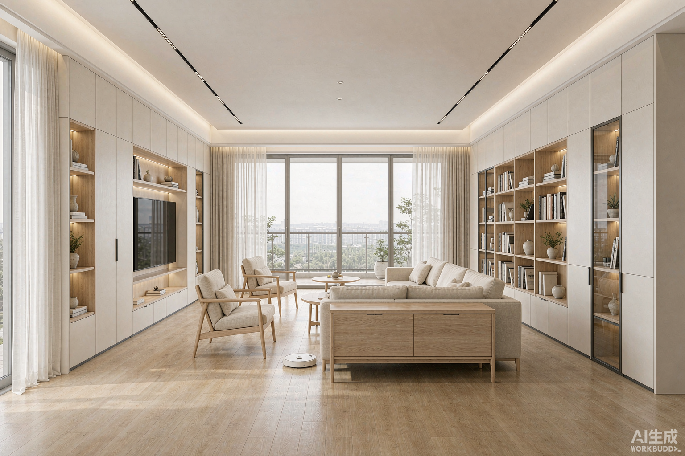
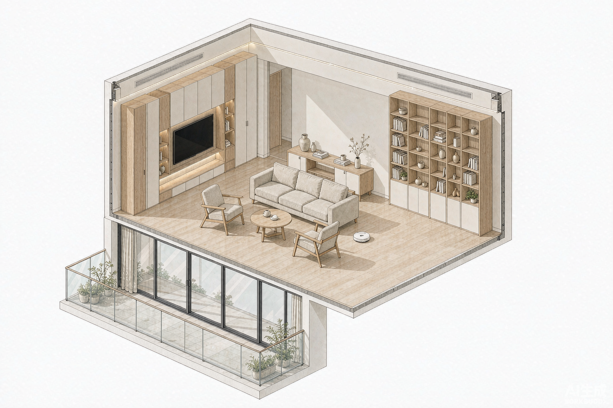

案例检索 · 尺寸俯视图 · 效果渲染 · 户型图校核 ｜ 2026-11-15 ｜ 湖畔大观 A²
同一套布局的两个视角。左柜嵌电视，右柜做书柜 / 玻璃展示，中间沙发不靠任何墙，背后一张半高矮柜当「靠山」，两把高脚单椅 + 小圆茶几收成会客岛。全屋浅木通铺、无地毯、无门槛，扫地机器人可从岛外绕行一圈。


红虚线是扫地机器人绕岛环线，灰色带是 ≥900mm 连续主通道。柜子打在东西两堵短边墙上，南面 6.2m 全部留给采光。
| 部位 | 建议尺寸 | 为什么 |
|---|---|---|
| 两侧整墙柜 | 各 600 深，通顶，左嵌电视 / 右做书柜玻璃门 | 两面 4.2m 长柜 ≈ 21.8㎡ 柜门面积，四代宅收纳量一次吃满；封闭门板为主，开放格 ≤ 2 成 |
| 中间净宽 | 6.2 − 0.6×2 = 5.0m | 横向观看轴只需约 3.2m，还有 1.8m 余量，所以两侧打柜不会挤 |
| 电视 → 沙发 | 3.0–3.3m | 65–75 寸合适；别硬把电视挂到 6.2m 长边墙，视距会变 5m+ |
| 沙发背后 | 1.0–1.1m 高半高矮柜 400 深 + 背后 ≥900 通道 | 给「浮」着的沙发一个靠山，兼做客餐分界、收纳、老人起身借力 |
| 机器人环线 | 岛四周 ≥600，主通道 ≥900 | 红虚线必须闭合，否则会客岛中间会变成永久死角 |
这张图比之前那版精确得多（带完整尺寸链），已读出的数字如下。
| 项目 | 图上标注 |
|---|---|
| 客餐厅 | 24.31㎡（不是之前缩略图看成的 33㎡） |
| 阳台 / 厨房 | 6.97㎡ / 4.64㎡ |
| 三间卧室 | 13.61㎡ / 8.23㎡ / 7.25㎡ |
| 两个卫生间 | 3.39㎡ / 4㎡ |
| 顶部横向尺寸链 | 1634 + 2698 + 1762 + 1833 + 1708 = 9635mm |
| 底部横向尺寸链 | 2507 + 1370 + 5011 + 748 = 9636mm（其中 5011 对应阳台宽约 5.0m） |
| 左侧纵向尺寸链 | 527 + 855 + 1760 + 4187 + 671 = 8000mm |
| 右侧纵向尺寸链 | 1473 + 7692 + 905 + 693 |
按图中比例，客餐厅是一个南北长条（约 3.4m 宽 × 6.9m 深，24.31㎡ 也吻合），并不是 6.2m 的横向面宽。所以「6.2m 横厅」有两种可能，我把两种并列留着，不替你拍板：
口径 A · 打通后：拆掉相邻 8.23㎡ 房间并入客厅，3.4 + 2.8 ≈ 6.2m 变成横厅。这正好接上项目里已有的「客厅魔变」打通方案，本页俯视图与渲染图按这个口径画。前提：先查剪力墙 / 承重墙 + 走物业审批。
口径 B · 6.2m 指长边进深：不拆墙，现状净宽只有约 3.4m，两侧各打 600 柜后只剩 2.2m，围合式做不了，应改一字型 / L 型 + 可移动单椅。
量房时请一并拿到：客餐厅净宽 / 净进深、剪力墙位置、梁高、南向窗台与阳台推拉门形式。本页所有尺寸在实测前都算方案级判断。
按「横厅 + 沙发不靠墙 / 围合 + 柜子」筛的，尺寸最接近的是 6.8m 与 6.32m 两例。案例文字来自公开检索摘要，图片与细节建议点开原链接核对。
套内 160㎡，横厅宽 6.8m。沙发背景墙 3.6m 做满墙柜，圆弧造型与柜体穿插，半开放层用玻璃柜门减清洁量；3.4m 皮质弧形沙发不靠墙、不靠茶台，围合式布局，孩子留出充足活动区。
屋主坚持沙发不靠墙，两张长沙发把茶几围在中间，铺整面灰色地毯界定会客区；空出来的沙发墙做成一整面开放格储物；电视墙艺术涂料 + 石材地台；无主灯。
建面 90㎡ / 套内 80㎡，客餐厅宽 4.7m、进深 6m。沙发不靠墙居中，与可拉伸餐岛形成两条洄游动线，顺带隔出完整电视墙；取消大茶几改用角几；浴室柜下预留扫地机上下水与电位。
拆掉厨房与书房之间一半隔墙，餐桌挪到横厅中央、四面都能走人，吃饭 / 聊天 / 写作业共用；对面嵌一组水吧台，把原本「从玄关到主卧一条纯走廊」的浪费面积盘活。
把西面房间打开、合并过道改成大横厅；餐边柜 + 岛台 + 餐桌做成回形动线围合式；大梁用弧形吊顶内嵌线性灯弱化；无主灯 + 轨道灯。
定制方明确点名横厅两大错误：整面墙做满柜，通透感立刻打折；沙发靠墙导致中间空一大块。他们的做法是沙发不靠墙、背后留通道 + 矮柜或半高书柜；电视墙柜厚控制在 30cm 内、浅色、开放格与封闭门交替；不放大茶几，改小边几 / 移动推车。
≥6m 横厅沙发离墙 60–80cm，靠背高度 <85cm 免挡视线 7.4m×5.2m 案例沙发居中后与餐桌留 2.5m 通道 中小户型沙发背后只留 25–35cm 做薄书架，通道需 ≥80cm 6m 以上餐厅可考虑餐岛一体
| 方案 | 柜深 | 中间净宽 | 代价 |
|---|---|---|---|
| 两侧都 600（本页渲染图） | 600 + 600 | 5.0m | 收纳最大，但两面顶天立地柜最容易显堵 → 必须浅色 + 无把手 + 至少一侧留开放格 / 玻璃门 |
| 电视侧 350 + 沙发侧 600 | 350 + 600 | 5.25m | 推荐折中：电视墙做薄柜弱化体量，重收纳集中到沙发侧 |
| 两侧都 350 | 350 + 350 | 5.5m | 最通透，但收纳量近乎减半，四代宅慎选 |
围合式的标配 —— 大地毯 + 细腿单椅 + 落地灯 + 边几 —— 正好是扫地机器人的四大障碍，沙发悬空还会形成机器人绕不进去的孤岛。若确定做围合：
① 取消地毯（或可机洗短绒、边缘不翘）；② 单椅 / 茶几统一「抬高 ≥12cm 支脚」且可挪，落地灯改壁灯或吊顶；③ 岛四周留 ≥600mm 回转宽度（俯视图红虚线）；④ 柜子要么全落地封底、要么底部留 ≥12cm，最忌 3–8cm 半吊子缝。这与 09 区「全落地封底 vs 抬高支脚」是同一个决定。
适老向：沙发背后悬空，老人起坐没支撑、背后有人经过易受惊 → 1.0–1.1m 半高矮柜正好当靠山兼借力；地面别加地毯卷边（防绊倒），与「全屋无高差」一致。